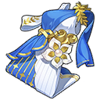
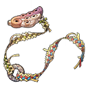

추천 광추
이별이 더 아름답도록
최대 HP·HP 변동의 방어력 무시·용 퇴장 후 자기 행동 당김
효과 자세히
HP +30%. 본체·기억 정령이 자신의 턴에 HP 소모 → 두 유닛이 방어력 30% 무시(2턴). 정령 퇴장 → 본체 행동 12% 당김(필살기당 1회).
꽃은 잊지 않는다
본체·기억 정령 치명타 피해
효과 자세히
치명타 피해가 40% 증가. 기억 정령이 가하는 치명타 피해가 추가로 48% 증가
땀은 많이, 눈물은 적게
치명타 확률과 용 주력 피해
효과 자세히
치명타 확률이 20% 증가하며, 기억 정령이 필드에 있을 시 장착한 캐릭터와 기억 정령이 가하는 피해가 36% 증가
이야기의 다음 페이지
최대 HP와 기억 정령의 치유량
효과 자세히
HP 최대치가 32% 증가. 기억 정령이 공격하면 장착한 캐릭터와 기억 정령의 치유량이 24% 증가, 지속 1턴
찰나에 결정되는 승리
치명타 피해 및 기억 정령 스킬 연계
효과 자세히
치명타 피해가 24% 증가하며, 기억 정령이 아군에게 스킬 발동 시 모든 아군이 가하는 피해가 16% 증가, 지속 3턴
추천 유물
망국을 애도하는 시인 4 · 고요한 습골지 2
- 머리
 주옵션HP부옵션치명타 확률 · 치명타 피해 · HP%
주옵션HP부옵션치명타 확률 · 치명타 피해 · HP% - 손
 주옵션공격력부옵션치명타 확률 · 치명타 피해 · HP%
주옵션공격력부옵션치명타 확률 · 치명타 피해 · HP% - 몸통

주옵션치명타 확률 / 치명타 피해부옵션치명타 확률 (주옵션 제외) · 치명타 피해 (주옵션 제외) · HP% - 다리
 주옵션HP%부옵션치명타 확률 · 치명타 피해
주옵션HP%부옵션치명타 확률 · 치명타 피해 - 구체
 주옵션HP% / 양자 피해 증가부옵션치명타 확률 · 치명타 피해 · HP% (주옵션 제외)
주옵션HP% / 양자 피해 증가부옵션치명타 확률 · 치명타 피해 · HP% (주옵션 제외) - 매듭
 주옵션HP%부옵션치명타 확률 · 치명타 피해
주옵션HP%부옵션치명타 확률 · 치명타 피해
이 조합을 추천하는 이유
시인 4세트 → 전투 전 속도 95 미만에서 본체와 용의 치명타 확률 +32%. 습골지 → HP와 치명타 피해.
망국을 애도하는 시인 4 · 꿈을 엮는 요정의 낙원 2
- 머리
주옵션HP부옵션치명타 확률 · 치명타 피해 · HP%
- 손
주옵션공격력부옵션치명타 확률 · 치명타 피해 · HP%
- 몸통 주옵션치명타 확률 / 치명타 피해부옵션치명타 확률 (주옵션 제외) · 치명타 피해 (주옵션 제외) · HP%
- 다리
주옵션HP%부옵션치명타 확률 · 치명타 피해
- 구체
 주옵션HP% / 양자 피해 증가부옵션치명타 확률 · 치명타 피해 · HP% (주옵션 제외)
주옵션HP% / 양자 피해 증가부옵션치명타 확률 · 치명타 피해 · HP% (주옵션 제외) - 매듭

주옵션HP%부옵션치명타 확률 · 치명타 피해
이 조합을 추천하는 이유
꿈의 낙원 → 필드 아군이 4명에서 벗어나는 만큼 피해 증가. 에버나이트·히아킨의 기억 정령으로 소환 중 중첩을 확보하세요.
이 정도면 잘 키웠다
동일 파티·광추 기준 · 조건 [*]
| 스탯 | 추천 스탯 | 준종결 | 종결 |
|---|---|---|---|
| HP [*] 카스토리스와 용의 피해에 기여하는 마을 HP. | 7,000 | 7,500 | 8,000+ |
| 치명타 확률 [*] 시인 4세트와 팀 버프 포함. | 전투 80% | 전투 90% | 전투 100% |
| 치명타 피해 [*] 용의 치명타 확률과 함께 균형 조정. | 200% | 210% | 220%+ |
| 속도 [*] 시인 발동의 전투 진입 전 조건. 속도 신발과 부옵션을 피하세요. | 95 미만 | 95 미만 유지 | 95 미만 유지 |
육성 단계의 기준
Lv.80 · 5성 유물 +15. Prydwen 참고 범위와 발동 조건을 바탕으로 나눈 편집 목표입니다.
성혼과 추천 돌파
성혼 1은 적 HP가 낮을 때 피해를 올리고 성혼 2는 용의 숨결과 본체 행동을 늘립니다.
1적 HP 80%/50% 이하 → 지정 공격 피해 120%/140%추천
적의 현재 HP가 자신의 HP 최대치의 80%/50% 이하일 시, 뼈의 발톱, 저승 용의 포옹, 어둠을 찢는 발톱, 암흑을 불태우는 화염의 숨결, 묘지를 불사르는 어둠의 날개가 대상에게 가하는 피해가 기존 피해의 120%/140%가 된다
2용 소환 후 숨결 HP 소모 2회 대체·자기 행동 100% 당김추천
기억 정령 죽음의 용을 소환한 후, 카스토리스는 타오르는 의지를 2스택 획득. 타오르는 의지는 최대 2스택 보유할 수 있으며, 죽음의 용 기억 정령 스킬 암흑을 불태우는 화염의 숨결의 HP 소모를 대체할 수 있다. 또한, 카스토리스의 행동 게이지가 100% 증가하며, 다음번 강화된 전투 스킬 발동 시 카스토리스가 새로운 꽃술 최대치의 30%만큼 새로운 꽃술 포인트를 획득
3필살기 +2 · 일반 공격 +1 · 기억 정령 특성 +1 · 기억 정령 스킬 +1
필살기 +2 · 일반 공격 +1 · 기억 정령 특성 +1 · 기억 정령 스킬 +1
4아군이 받는 치유 +20%
카스토리스가 필드에 있을 시, 모든 아군이 치유를 받을 시의 회복량이 20% 증가
5전투 스킬 +2 · 특성 +2 · 기억 정령 스킬 +1
전투 스킬 +2 · 특성 +2 · 기억 정령 스킬 +1
6본체·용의 양자 저항 관통 +20%·용 약점 무시와 바운스 강화
카스토리스와 죽음의 용이 피해를 가할 시 양자 속성 저항 관통이 20% 증가. 죽음의 용은 공격 중에 약점 속성을 무시하고 적의 강인성을 감소시킬 수 있으며, 약점 격파 시 양자 속성의 약점 격파 효과를 발동하고, 특성 묘지를 불사르는 어둠의 날개의 바운스 발동 횟수가 추가로 3회 증가
추천 파티


기본 운영과 행적
기본 운영
HP를 회복할 수 있는 동료를 배치하세요. 새로운 꽃술을 채워 죽음의 용을 소환하고, 용의 숨결을 사용한 뒤 사라질 때의 추가 타격까지 활용합니다.
행적 우선순위
기억 정령 스킬 = 기억 정령 특성 > 필살기 = 특성 > 전투 스킬 > 일반 공격. 아군 HP의 회복과 소모를 연결하는 행적을 해금하세요.
아하 속도 계산기 →기준과 출처 · 2026-11-25
4.7 · 한국어 게임 데이터 및 Prydwen 육성 분석